T(trap)捕捉
根據統計，每年至少有十萬隻的流浪貓狗會被捕捉進入公立的收容所裡，但礙於民間團體的人力和資源有限，通常會以能夠生育的母貓犬作為優先捕捉的對象。在實際捕捉的過程中，「誘捕籠」是最常使用的工具，只要在籠內外沿路放置食物，引誘貓狗進入籠內，當誘捕籠的機關被踩踏，籠子便會自動關起來。
N(neuter)結紮
由獸醫師對貓犬施行絕育手術。而絕育手術分為二種方式，第一種方式就和人類例行性的絕育手術一樣，只針對母貓犬的子宮和公貓犬的輸精管進行結紮；而另一種方式則是將子宮卵巢和睪丸摘除。以上兩種方式皆能達到絕育的目的，但因為結紮手術會保留貓犬的子宮卵巢或睪丸，因此仍會一直產生荷爾蒙，雖然絕大多數不會懷孕，但仍有懷孕的風險；而生殖器官摘除手術的好處是貓犬在絕育後荷爾蒙的分泌也會減少，便不再會繼續發情及交配，因此國內外都建議以完全摘除生殖器官的方式來進行手術。透過大規模、高密度的絕育行動，來控制區域內流浪貓犬繁殖的速度，以人道、有效的方法達到源頭減量的效果。

V(vaccinate)疫苗施打

注射狂犬病疫苗注射狂犬病疫苗注射狂犬病疫苗注射狂犬病疫苗注射狂犬病疫苗注射狂犬病疫苗注射狂犬病疫苗注射狂犬病疫苗注射狂犬病疫苗注射狂犬病疫苗注射狂犬病疫苗注射狂犬病疫苗注射狂犬病疫苗注射狂犬病疫苗注射狂犬病疫苗注射狂犬病疫苗注射狂犬病疫苗注射狂犬病疫苗

R(return)原地放養

完成絕育手術的貓犬，在休養一段時間後便會被帶回原本捕捉的地點進行釋放，根據貓狗的地域性，原地釋放可防止更多流浪動物的進入，有效控制流浪動物的數量。